ShopX：面向 Agentic Shopping 的意图到商品履约基础模型
[toc]
这篇论文讨论的是一个很具体、也很贴近电商推荐系统下一阶段形态的问题：当用户不再只在搜索框里输入关键词、也不只在信息流里被动浏览，而是把“我周末去上海主题乐园，想要适合拍照又能走一天的穿搭”这类开放意图交给 AI 购物助手时，系统到底应该怎样把语言意图落到可购买、可解释、可追踪的商品集合上。论文标题是 ShopX: A Foundation Model for Intent-to-Item Fulfillment in Agentic Shopping，作者团队来自 Alibaba / Taobao & Tmall 相关生产日志场景，一作主机构按事实包记为阿里。论文入口：arXiv:2606.31693。代码/项目状态：本轮只核验到 arXiv 论文入口，未在 arXiv 页面或 PDF 首页核验到公开代码仓库。
常见的 AI 购物实现把 LLM 放在外层做意图理解和工具编排，却仍把真正的商品检索、排序和组合交给窄接口的外部系统；复杂购物意图、多轮偏好、场景约束和商品证据在这个边界上被压缩，语言理解与 item-space 履约之间因此出现低带宽断层。
1. 背景和问题
ShopX 的问题意识不是“让 LLM 会聊天推荐商品”这么宽泛，而是把推荐系统里长期存在的商品空间执行问题重新放到 agentic shopping 中审视。传统电商推荐可以把任务拆成搜索、召回、排序、重排、解释和反馈学习，每个模块对输入输出都有相对固定的形式；LLM agent 则擅长把用户的自然语言、历史偏好、上下文约束和多轮反馈组织成计划。两者结合时，一个很自然的工程方案是让 LLM 在外层做 query rewriting、profile summarization、tool calling 和自然语言解释，底层仍调用已有 search/retrieval/ranker 服务。论文把这类方案称为 tool-mediated fulfillment：语言模型负责“想”，外部 item-space 系统负责“找和排”。
这个架构的现实优点很明显：可以复用成熟的检索和排序基础设施，风险比从零训练一个生成式商品模型低；也能把 LLM 的语言理解能力快速接入到既有推荐链路。但论文指出，agentic shopping 里的用户意图往往不是一个短 query。它可能同时包含场景、预算、天气、风格、已选商品、隐式偏好、上一轮反馈和待澄清约束。如果这些信息要先被 LLM 压成一个工具参数，再交给检索或排序服务，很多细粒度信号就会在接口边界被压缩，尤其是跨商品兼容性、seed item 状态、长期画像和多轮修正。换句话说，LLM 也许理解了“去主题乐园拍照、喜欢粉色、要舒适防雨”，但工具接口只收到“推荐运动鞋”或“相似鞋子”之类窄输入，最终 item-space 执行无法完整反映原意。
论文把任务定义为 intent-to-item fulfillment：把灵活购物意图转成目录 grounded 的结果，包括 item list、比较、bundle、解释、follow-up action 或状态更新。这个定义比传统 recommendation 更宽，也比普通 conversational shopping 更硬，因为它要求输出最终能落到 catalog item evidence 上。ShopX 的核心判断是：如果 LLM 只在语言层规划，然后把商品空间执行外包给工具，系统仍然不是 model-native；真正的 model-native fulfillment 需要一个能直接操作商品表示的模型接口。语义 ID 提供了这个接口，但论文也提醒，已有 generative recommendation 主要把 SID 当作候选生成目标，仍偏 retrieval；ShopX 需要 SID 参与检索、listwise ranking、bundle generation、grounded response 和 state update。
从推荐系统视角看，ShopX 关心的是一个可能会反复出现的架构问题：当 agent 成为入口，推荐链路是否还应该被视为若干黑盒工具？如果答案仍是“LLM 只负责调用工具”，那么召回、排序、解释和多轮状态之间的接口会越来越多；用户意图越复杂，接口损耗越严重。ShopX 的路线更激进：让模型通过 SID 直接进入商品空间，让商品 token 成为模型可计划、可生成、可排序、可解释的对象。但这也带来新的约束：SID 必须足够语义可恢复，不能只是协同过滤 ID；训练必须保留通用语言、推理和指令跟随能力，不能把模型训成只会吐商品码的窄模型；评估也不能只看 HR@K，而要覆盖整条 agentic fulfillment 行为。
2. 方法
2.1 Framework and serving patterns：模型与 harness 的边界
论文第 2 节先定义 ShopX 的 serving framework，这个顺序很关键：ShopX 不是一个孤立推荐模型，而是被放在 agentic shopping workflow 中的 fulfillment core。harness 负责定义模型可见的 action protocol，并提供 Context、Catalog、State 三类 support surface；模型侧填充 Plan、Execute、Fulfill、Update 四个 action slot。核心机制不是把外部检索器包装成工具，而是让模型在同一套 item-space 接口里完成规划、商品操作、grounded response 和状态更新。
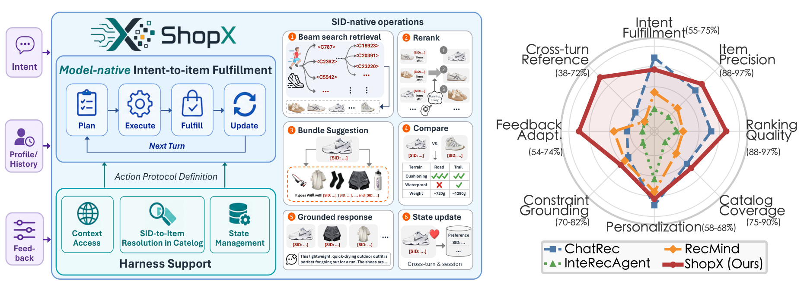
Figure 1 现在放在方法章，是因为它左侧展示的是 ShopX 的 framework placement：模型处在 fulfillment core，而不是在外层把 query 扔给搜索/排序 API；Context Access、SID-to-Item Resolution、State Management 则是 harness support surface，用来保障目录 grounding 和多轮状态。右侧雷达图虽然是系统指标概览，但它说明方法目标覆盖 Intent Fulfillment、Item Precision、Ranking Quality、Catalog Coverage、Personalization、Constraint Grounding、Feedback Adaptation、Cross-turn Reference，而不是单一检索分数。把这张图和后面的 Figure 3 连起来看，ShopX 的方法边界就清楚了：在线服务仍需要目录校验、状态持久化和服务治理，模型承担的是 SID-native item operation 与履约决策。
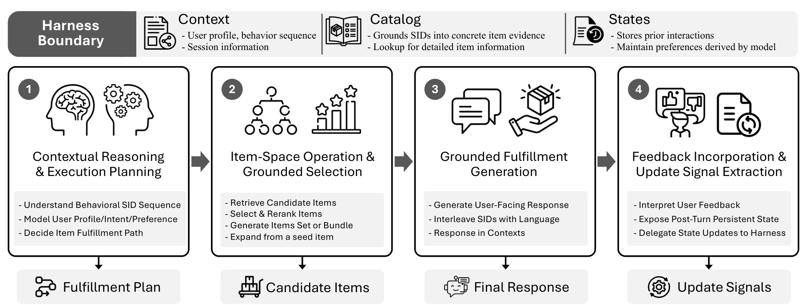
Figure 3 进一步展开 serving framework。Plan 阶段把当前请求、约束、Context/State 信息转成 fulfillment path；Execute 阶段根据计划做 SID-native 操作，例如 beam-search retrieval、select and rerank、bundle generation 或从 seed item 扩展；Fulfill 阶段把 selected items 和 Catalog evidence 转成用户可读回答；Update 阶段提取显式反馈和偏好变化，交给 harness 写回状态。论文随后把 serving patterns 分成 Intent-to-Item Fulfillment、Context-Augmented Personalization、Stateful Multi-Turn Fulfillment 三类，说明个性化、多轮引用和推荐解释共享同一个 action protocol，而不是被拆成彼此独立的工具清单。
2.2 Semantic IDs：从商品内容到 LLM 可操作 token
ShopX 的第二个方法层是 SID。论文认为普通商品 ID 对 LLM 不友好，协同过滤式 SID 又可能缺少语义可恢复性，所以它设计 semantically recoverable、LLM-operable 的 hybrid SID。Recoverability 要求 SID 保留类别、属性、风格、功能和视觉信息，模型可以从 SID 推回商品含义；LLM operability 要求 SID 可以稳定作为自回归生成目标，前缀结构不要让 next-token entropy 过高。
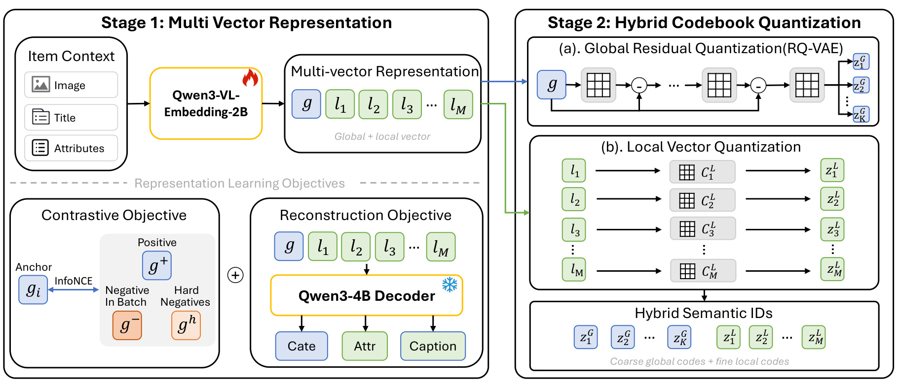
Figure 6 展示两阶段结构。Stage 1 用 Qwen3-VL-Embedding-2B 编码 image、title、attributes，输出一个 global embedding 和多个 local facet embeddings；global 部分承担对比学习，使商品在语义空间里形成可检索邻域，local 部分通过 reconstruction objective 保留类别、属性和 caption。Stage 2 把 global embedding 做 residual quantization，形成自回归稳定的 global prefix；把 local embeddings 分别做 vector quantization，形成补充语义细节的 local suffix。这个 global/local 分工解释了为什么作者最终选择 G2+L4：global prefix 负责“可生成和可邻域化”，local suffix 负责“可恢复细节”。
表示学习先使用 soft-target InfoNCE。设一个 batch 为 $B$，锚点商品 $i$ 的候选集合 $C(i)$ 由等价商品正例 $P_R(i)$、同类 hard negatives $H(i)$ 和 batch 内其余负例 $N(i)$ 组成，soft target $q_{i,k}$ 给等价商品最高权重、hard negative 较弱权重、普通负例零权重，核心损失为：
符号解释：$R$ 是商品间关系，论文重点使用 equivalent-product supervision；$B$ 是 mini-batch；$g_i$ 是商品 $i$ 的 normalized global embedding；$C(i)$ 是正例、hard negative 和普通负例集合；$q_{i,k}$ 是 soft target 权重；$\operatorname{sim}$ 是 cosine similarity；$\tau$ 是温度。这个公式的直觉是，不把同类但不等价商品简单当成负例，而是给它们弱语义拉力，让 global space 同时保持可检索和可区分。
为了让 representation 不只服务邻域检索，还能恢复商品语言，论文又引入 decoder-side next-token prediction，并把类别、caption、属性重建合成总目标：
符号解释：$Z_i$ 是用于重建的商品表示序列，$q_i$ 是任务提示，$y_i$ 是目标文本，$A_\eta$ 把 representation 映射到冻结 decoder $D_\psi$ 可用输入，$p_\psi$ 是 token 概率；$\ell_i^{cat}$、$\ell_i^{cap}$、$\ell_{i,m}^{attr}$ 分别是类别、caption 和第 $m$ 个属性组的重建损失，$M$ 是 local vectors 数量，$\lambda_{TR}$ 控制重建权重。对 ShopX 来说，这一步的意义是让 SID 后续不仅能召回相似商品，还能支撑 grounded response 和属性约束推理。
Hybrid SID 先定义为 global prefix 加 local suffix，再分别量化：
符号解释：$G_K(i)$ 表示由 $K$ 个 global-prefix tokens 组成的 SID 前缀，$L_M(i)$ 表示 $M$ 个 local-suffix tokens，$\Vert$ 是序列拼接；$r_{i,0}=g_i$，$e^G_{k,c}$ 是第 $k$ 个 global codebook 的 codeword，$z^G_{i,k}$ 是第 $k$ 层选中 token；$\ell_{i,m}$ 是第 $m$ 个 local embedding，$e^L_{m,c}$ 是 local facet codebook 的 codeword。global RQ 让前缀具备自回归路径，local VQ 则补上 facet-level semantic recoverability。
2.3 Continued Pre-Training：先接入 SID，再注入电商知识
SID 只定义了 item-space token 接口，还不能保证 LLM 会用它。论文的训练 recipe 从 general LLM 出发，先做 SID token alignment，让模型知道文本与 SID token 可以互相映射；再做 Domain CPT，把 search、recommendation、ranking、profile understanding、catalog grounding 和通用 replay 混合起来，使模型成为 SID-aware domain base model。这里的顺序很重要：如果没有 SID alignment，后续 domain tokens 会让模型学到电商语言，却不一定能稳定生成商品 token；如果没有 general replay，domain specialization 又可能损伤通用指令跟随和推理。
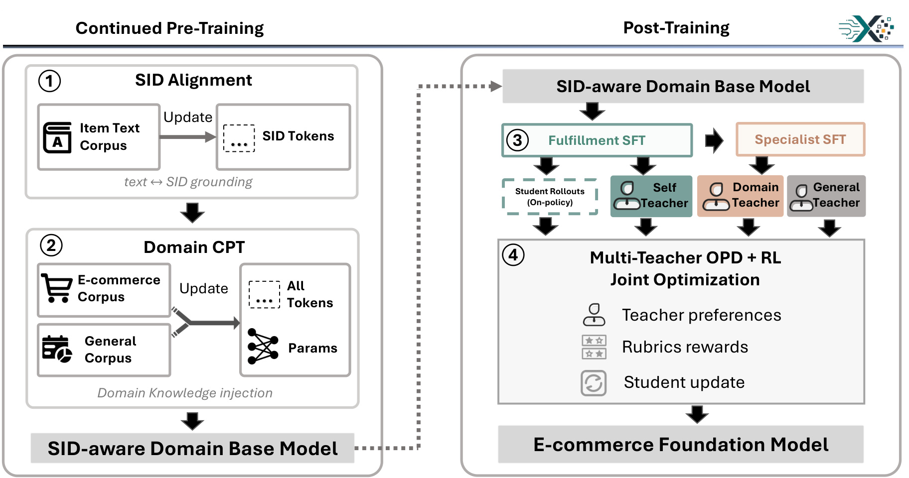
Figure 7 把训练顺序串起来：左侧 Continued Pre-Training 包括 SID Alignment 和 Domain CPT，目标是得到 SID-aware domain base model；右侧 Post-Training 包括 Fulfillment SFT 和 OPD-RL，目标是让模型按 action protocol 完成多任务履约。方法章不把 Table 2 放在这里展开，而是留到实验章作为训练配比证据读取；但从方法角度看，CPT 的关键是能力配比：shopping 侧需要目录和行为 grounding，general 侧需要 replay，二者共同决定模型是在“懂商品”还是“只会背商品码”。此外，SID Alignment 在图中被放在 Domain CPT 前面，说明作者先把新增 SID token 与文本/item 表示对齐，再用大规模电商语料注入搜索、推荐、排序和画像理解知识；这个顺序避免模型只学习电商话术却无法稳定操作商品 token。
2.4 OPD-RL：多教师蒸馏与奖励信号联合更新
SFT 能教模型遵守 action protocol 和任务格式，但论文认为它还留下三个缺口：SID prediction 需要更深的 item-token specialization，通用能力不能在 SID 专门化中塌掉，排序和 interleaved response 需要 outcome-level reward。因此 ShopX 在 post-training 阶段使用 Multi-teacher On-Policy Distillation 加 RL，把任务分成 General、SID Prediction、Ranking、Interleave、Other 五类。General 和 SID Prediction 更依赖 teacher token signal，Ranking 与 Interleave 更依赖 reward，Other 则用 frozen self teacher 保持行为稳定。
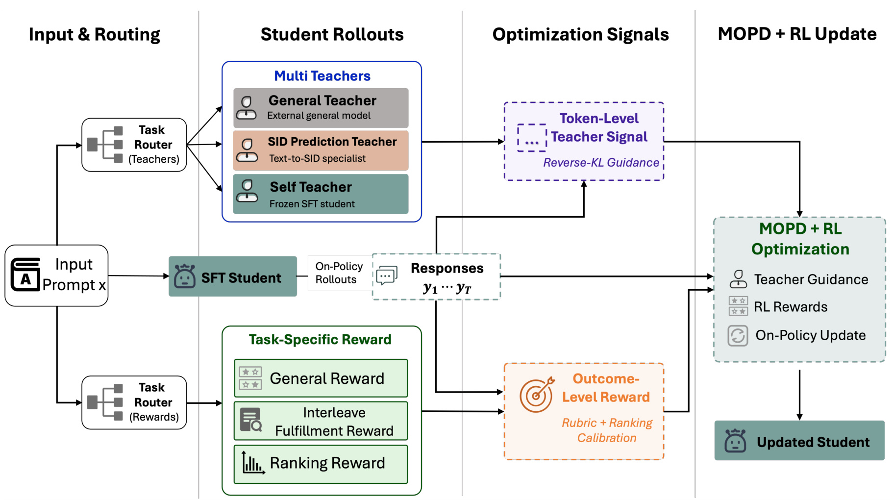
Figure 8 展示 Table 4 背后的信号流：输入 prompt 先被路由到 teachers 或 rewards，student rollouts 生成 responses；General、SID Prediction、Other 主要走 teacher guidance，Ranking 和 Interleave 走 reward feedback，General 同时还有 judge reward。这个图解释了 ShopX 为什么不是简单 SFT 后再跑一个统一 PPO/GRPO：不同 task family 的 failure mode 不一样，SID 预测要避免 token-level 退化，排序和 interleaved fulfillment 要看整体输出质量，通用能力则需要 teacher/reward 双重约束。
MOPD 的核心是 on-policy reverse KL 形式的 teacher guidance。对于有 OPD supervision 的任务族 $k$，教师 $\pi_{\phi(k)}$ 给学生 rollout 的每个 token 一个相对权重，形成多教师蒸馏目标：
符号解释：$x$ 是 prompt，$k$ 是任务族，$D_{OPD}$ 是有教师监督的训练分布，$\tau_g=(y_{g,1},\ldots,y_{g,T_g})$ 是第 $g$ 条 student trajectory，$\pi_{\phi(k)}$ 是任务族对应教师，$\theta$ 是学生参数，$\hat A^{\phi(k)}_{Teacher,g,t}$ 是由 teacher/student token probability ratio 派生的 token-level signal。这个目标让不同教师各管自己擅长的能力，而不是用一个教师覆盖所有购物任务。
对于 reward feedback，论文采用 GRPO 风格的组内归一化 advantage，并把 teacher signal 与 reward signal 合成最终 token-level 更新：
符号解释：$r_g$ 是第 $g$ 条 response 由任务族 reward function $\psi(k)$ 给出的分数，$G$ 是同一 prompt 的 rollout 数；$K_{OPD}$ 是有 teacher supervision 的任务族集合，$K_R$ 是有 reward feedback 的任务族集合，$\alpha_k$ 控制 reward 权重，$D$ 是五类任务混合后的 OPD-RL 训练分布。联合目标把 SID prediction、ranking、interleaved response 和 general behavior 放在同一更新框架里，但用任务族路由避免彼此压制。
3. 实验结果
3.1 Evaluation protocol：评估的是完整履约框架
ShopX 的实验不是传统推荐论文里只报告 Recall、NDCG 或 HR 的形式。作者先构造 framework-level benchmark：从匿名 Taobao 生产日志、用户 profile、catalog snapshot 和 task metadata 出发，构造 single-turn 与 multi-turn cases；让 ShopX framework 和 tool-mediated baseline framework 在共享 action interface 下运行；再用 rubric-based LLM judge 对 response quality、process quality、多维 overview metrics 打分。这种设计的好处是比较对象是“完整服务配置”，而不是单个 retriever 或 ranker。原论文的 evaluation workflow 图文本密度很高，裁剪后会被本地验证器误判为正文段落，因此这里保留协议解释，不再放入该图像；后续 Table 5/6 承担主要结果证据。
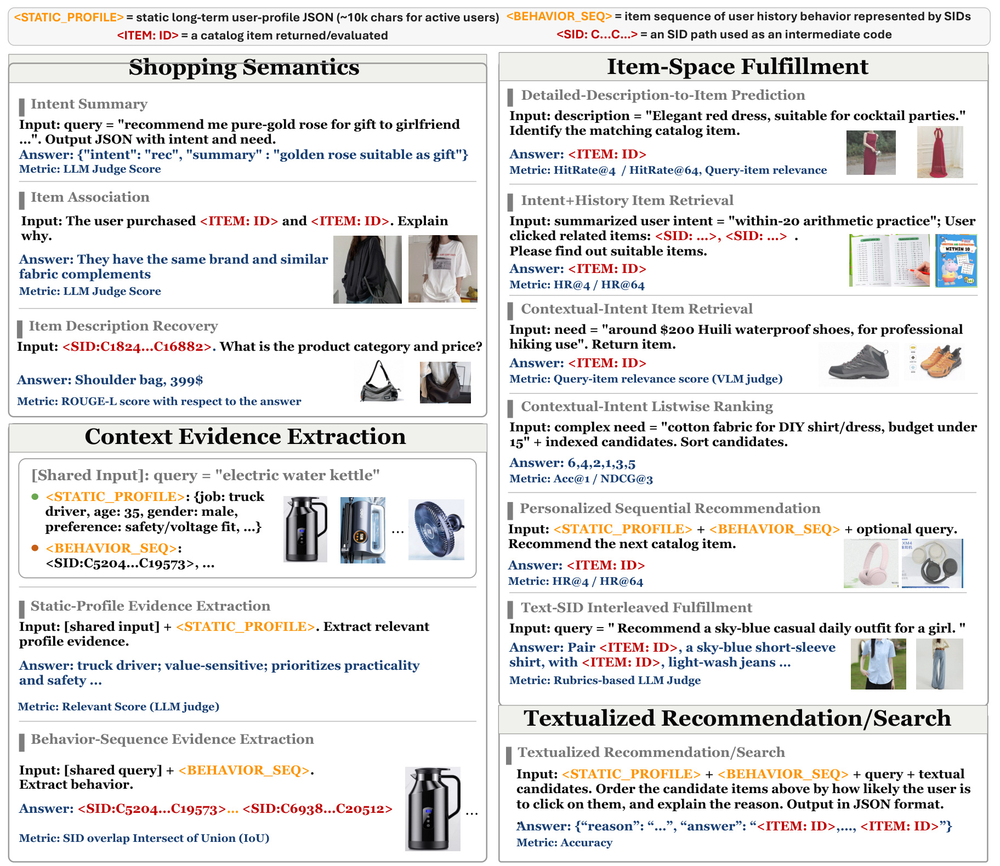
Figure 5 展示 capability breakdown 的诊断任务。左侧包括 Shopping Semantics 和 Context Evidence Extraction，例如意图摘要、商品关联解释、从 static profile 或 behavior sequence 中抽取相关证据；右侧包括 Item-Space Fulfillment 和 Textualized Recommendation/Search，例如 detailed-description-to-item prediction、intent+history retrieval、contextual-intent ranking、personalized sequential recommendation、text-SID interleaved fulfillment。这个对象很重要，因为它把“ShopX 变好”拆成可诊断能力，而不是只报告 framework 结果。尤其是 item-space fulfillment 的任务行会区分纯文本 LLM 可以做的排序与必须生成/使用 SID 的检索，这有助于判断 SID 原生模型到底贡献在哪里。
3.2 Framework-level 与 capability breakdown 主结果
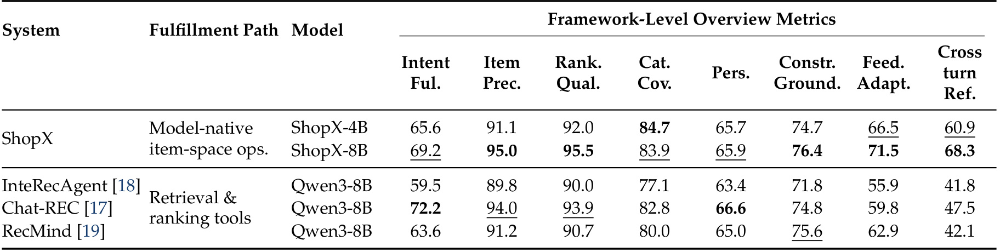
Table 5 是论文最直接的主结果。ShopX-8B 在 Intent Fulfillment 上为 69.2，低于 Chat-REC 风格系统的 72.2，但在 Item Precision 95.0、Ranking Quality 95.5、Feedback Adaptation 71.5、Cross-turn Reference 68.3 上都很强；ShopX-4B 也在 Cross-turn Reference 60.9 上明显高于工具中介系统。这个表的读法不能简单写“ShopX 全面最好”，因为 Chat-REC 在 Intent Fulfillment 和 Personalization 上仍有竞争力。更准确的结论是：当系统需要把上一轮状态、反馈修正、商品证据和 item-space 操作保持连贯时，model-native fulfillment 更有优势；但第一轮意图满足或个性化表达未必总压倒强工具系统。这一点反而让论文可信，因为它没有把外部检索/排序 baseline 设得很弱。
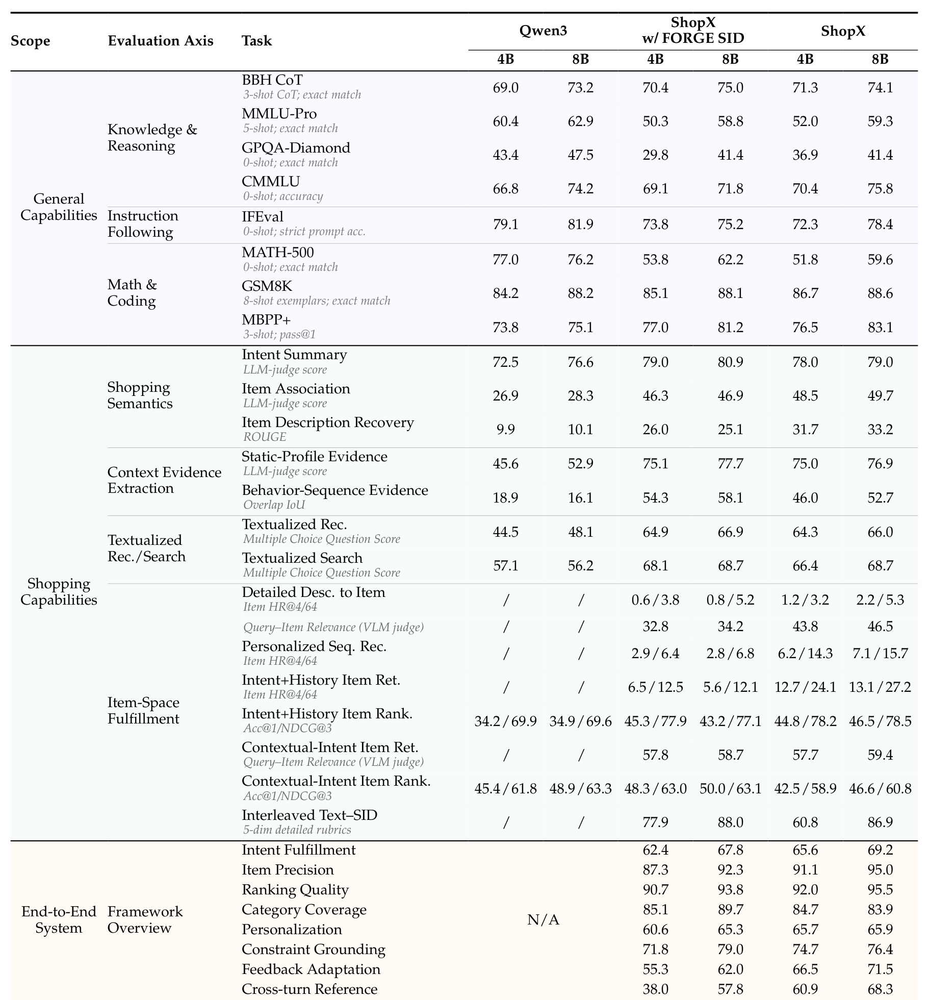
Table 6 更细地揭示了 trade-off。通用能力方面，ShopX 在 GPQA-Diamond、MATH-500 等较难知识/数学行上会下降，例如 8B 的 MATH-500 从 Qwen3 的 76.2 到 ShopX 的 59.6；但 GSM8K、MBPP+ 和 CMMLU 等行并非全部崩掉。购物能力方面，ShopX 在 item association、item description recovery、static-profile evidence、intent+history item retrieval、personalized sequential recommendation 等行有明显提升。特别是 personalized seq rec 的 HR@4/64 从 FORGE SID 8B 的 2.8/6.8 提升到 ShopX 8B 的 7.1/15.7，说明 selected G2+L4 SID 对 history-conditioned item generation 有价值。不过 contextual-intent item ranking 上，Qwen3 8B 是 48.9/63.3，ShopX 8B 是 46.6/60.8，说明当候选文本证据已经足够丰富时，通用语言模型的文本排序能力仍很强，SID specialization 不一定带来收益。
这个结果对工程落地有一个冷静提醒：ShopX 不是“把所有推荐问题都改成生成 SID 就好”。它的价值集中在 item-space generation、历史条件检索、跨轮状态和 SID-text interleaving；对于已有候选集的文本排序，外部 ranker 或通用 LLM reranker 可能仍然有效。如果线上系统只是把 ShopX 当成一个替代 ranker，而没有让它承担状态、SID 操作和 grounded fulfillment，可能无法复现论文里最有意义的系统级收益。
3.3 SID、CPT 与 post-training 消融
论文把方法拆得比较细，因此消融证据也分三层：表示学习和 SID 构造、CPT 阶段、post-training 阶段。先看表示学习。
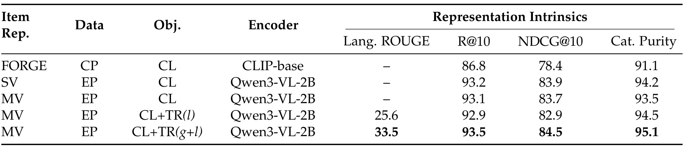
Table 7 比较了 FORGE、single-vector、multi-vector、不同 supervision 与 reconstruction objective。FORGE 使用 collaborative-product supervision 和 CLIP-base encoder，在 R@10/NDCG@10/Cat. Purity 上分别为 86.8/78.4/91.1；EP supervision 加 Qwen3-VL-2B 后，SV 与 MV 的 R@10 都到 93 左右，Cat. Purity 也超过 93。最关键的是最后一行 MV + EP + CL+TR(g+l)：Lang. ROUGE 达 33.5，R@10/NDCG@10/Cat. Purity 为 93.5/84.5/95.1。这说明 reconstruction objective 特别有助于语言可恢复性，而 global+local 都参与重建时效果最好。这里的结论与方法章一致：ShopX 的 SID 不是只为协同过滤邻域服务，而是要能被模型拿来恢复商品含义。
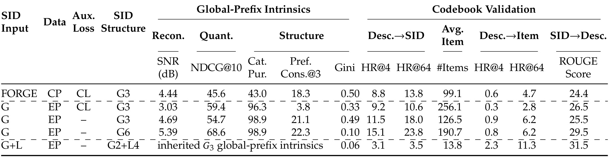
Table 8 固定较好的 representation 后比较 SID structure。纯 global G3/G6 在 global-prefix intrinsics 上更容易解释，比如 G6 的 NDCG@10 为 68.6，Desc→SID HR@64 为 23.8；但 G+L 的 G2+L4 在 codebook validation 的 Desc→Item HR@4/64 和 SID→Desc ROUGE 上更有优势，分别到 2.3/11.3 和 31.5。它的 Desc→SID HR@4/64 很低，只有 0.06/3.1，说明 hybrid SID 并不是所有方向都更容易预测；但它能保留更多 local semantic information，使 item description recovery 更强。这个表提供了一个关键工程取舍：global prefix 让模型更容易生成稳定前缀，local suffix 提供细节恢复能力，最终 $G2+L4$ 是在 LLM operability 和 recoverability 之间折中。
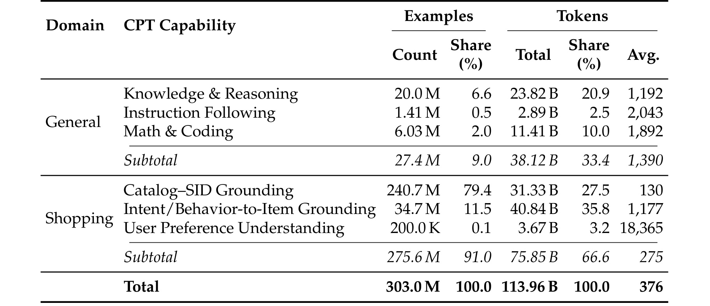
Table 2 原本是方法配比表，但在这次修复中放到实验结果章，因为它作为训练 recipe 的可核查证据更适合与后续 CPT 消融一起读。表里总量是 303.0M examples、113.96B tokens，其中 shopping 侧占 91.0% examples、66.6% tokens，general 侧占 9.0% examples、33.4% tokens。这个比例说明 ShopX 的 Continued Pre-Training 不是纯电商语料灌入：它用大量 shopping examples 建立目录 grounding、搜索推荐和用户行为理解，同时保留相当规模的 general replay 维持通用能力。后面的 Table 9 与 Figure 9 证明这种 replay 不是装饰，而是影响 IFEval、CMMLU、GSM8K 与购物指标之间平衡的关键变量。
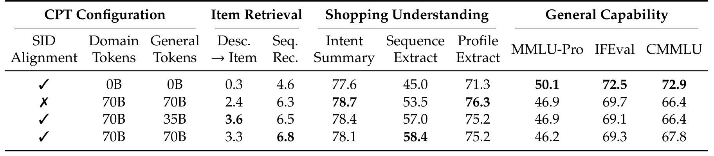
Table 9 说明 SID alignment 与 Domain CPT 的顺序很重要。只做 SID alignment、没有 domain/general tokens 时，Desc→Item 只有 0.3，Seq. Rec. 为 4.6；没有 SID alignment 但做 70B domain + 70B general 时，Desc→Item 提升到 2.4，Seq. Rec. 到 6.3，但 general capability 有下降。带 SID alignment 后，70B domain + 35B general 让 Desc→Item 达 3.6，70B domain + 70B general 让 Seq. Rec. 达 6.8，Sequence Extract 达 58.4。这个表说明：SID alignment 不是可省的前置步骤；general replay 也不是越少越好，它在保持 IFEval/CMMLU 等通用能力上有意义，但太多或太少都会影响不同购物指标。
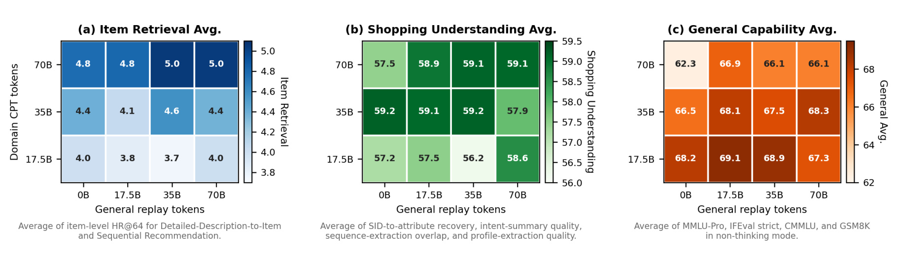
Figure 9 把 CPT token grid 可视化。左图 item retrieval 平均分随 domain tokens 增加而升高，在 70B domain 行达到 4.8 到 5.0；中图 shopping understanding 的高分集中在 35B/70B domain 与适度 general replay 区域；右图 general capability 则更偏好较多 general replay，35B domain + 70B general 达 68.3。三张热图一起说明 Domain CPT 是多目标折中：item retrieval 想要更多 domain grounding，general capability 想要 replay，shopping understanding 处在中间。论文最终选择的配比因此不是单指标最优，而是服务后续 agentic fulfillment 的平衡点。
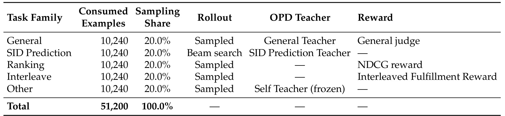
Table 4 同样放在实验章，是因为它给出了最终 post-training 运行的实证配置，而不是抽象算法框图。五个 task family，General、SID Prediction、Ranking、Interleave、Other，各消耗 10,240 prompts，采样比例都是 20.0%；General 同时使用 OPD 与 reward，SID Prediction 和 Other 使用 OPD-only，Ranking 与 Interleave 使用 reward-only。这个表与 Figure 8 相互验证：论文没有让所有任务共享同一种优化信号，而是按能力缺口分配 teacher 或 reward。这样设计的意义在 Table 10 里才完全显现，尤其是 SID Prediction Teacher 单独提升 retrieval 却损坏 profile/rank 能力，以及 full rewards 显著提升 Text-SID 和 Rank 的现象。
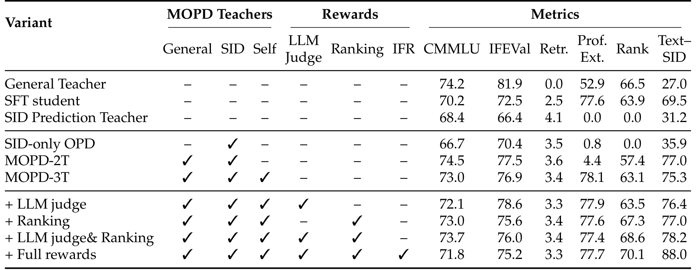
Table 10 是 post-training 最重要的消融。General Teacher 通用能力最高但 Retr. 为 0.0，说明基础 LLM 不会 SID retrieval；SFT student 获得 broad shopping capability，Profile Extraction 77.6、Rank 63.9、Text-SID 69.5，但 Retr. 只有 2.5；SID Prediction Teacher 把 Retr. 提到 4.1，却让 Profile Extraction 和 Rank 都变成 0.0，说明只专门化 SID 会损坏其他能力。MOPD-2T/3T 逐步恢复 general 和 profile/rank 能力；加入 full rewards 后，Text-SID 达 88.0，Rank 达 70.1，但 CMMLU 和 IFEval 不如 General Teacher。这个表完整支撑了论文的训练设计：单一教师或单一 reward 都不够，必须用 task-family routing 避免 SID specialization 与通用购物能力互相压制。
3.4 证据边界
综合实验来看，ShopX 的证据链比较完整：Figure 5 定义诊断任务，Table 5/6 报告系统与能力结果，Table 7/8 解释 SID 设计，Table 2/9/Figure 9 解释 CPT 配比与混合，Table 4/10 解释 post-training 路由与消融。原论文的 Figure 18 是 text-SID interleaved qualitative examples，但该对象本身由大量自然语言示例构成，裁剪后会触发 body-prose 检查；因此本笔记不放该图，只保留结论：定性样例用于理解 SIDs 如何作为 grounded item references 与自然语言解释交织，不能替代 framework-level protocol、capability breakdown 和消融表。
它的不足也同样清楚。第一，framework-level 评价大量依赖 rubric-based LLM judge，虽然论文给出协议，但 judge 偏差、prompt 稳定性和商品目录快照外推仍需要谨慎。第二，使用匿名 Taobao 生产日志构造任务，业务真实性强，但外部复现难度高。第三，ShopX 对通用能力有可见损耗，尤其较难知识/数学任务，说明 domain specialization 仍有成本。第四，论文没有给出公开代码与可运行数据，当前更适合作为工业架构与训练 recipe 参考，而不是马上复现实验数值。
4. 总结
ShopX 最值得看的地方，是它把 LLM4Rec / generative recommendation 从“生成候选商品 ID”推进到“模型原生商品空间履约”。传统推荐链路里，召回、排序、重排和解释各自有成熟模块；agentic shopping 入口出现后，用户意图和上下文会变得更长、更动态、更像任务执行。ShopX 的判断是：如果仍把 LLM 当外层编排器，把商品空间执行封装成窄工具，就会在复杂意图、多轮反馈和状态引用上持续丢信息。因此它让 SID 成为模型可操作接口，让模型直接规划 SID-native retrieval、reranking、bundle、text-SID response 和 state update。
对推荐系统工程的启发主要有三点。第一，商品 ID 的可生成性不够，SID 还要语义可恢复；否则模型即使能生成 code，也难以支撑属性解释和 grounded response。第二，agentic 入口下的评估要从单点推荐指标扩展到 framework overview metrics，例如 intent fulfillment、constraint grounding、feedback adaptation 和 cross-turn reference。第三，训练 recipe 应该按能力拆信号：SID prediction、ranking、interleaved response、general ability 需要不同 teacher/reward，而不是用一个大一统 reward 解决。
局限也需要明确。1）论文的核心数据来自 Taobao 匿名生产日志和内部目录快照，外部复现性有限。2）评估依赖 LLM judge，虽然 rubric 细，但不同 judge 或 prompt 可能改变结论。3）ShopX 对通用能力有损耗，说明 e-commerce specialization 与 general reasoning 仍有张力。4）没有公开代码和数据，本轮无法验证训练细节、模型规模、服务延迟和线上成本。5）图表显示 ShopX 并非所有指标都最强，特别是纯文本 ranking 或首轮 intent fulfillment，强工具系统仍有竞争力。
更实际的落点是，ShopX 提醒推荐团队重新审视“接口带宽”这个常被忽略的问题。很多线上 agent 改造会先做 prompt、tool schema 和返回样式，但真正决定体验上限的，可能是用户意图、商品证据、候选集、反馈状态能否在同一决策面里持续保真。如果这些信号每轮都被重新压缩成窄 query，模型能力再强也只能补救一部分信息损失。
后续我会关注三条线索。第一，看作者是否公开更细的 serving harness、SID tokenizer 或离线 benchmark，因为这决定外部能否复现 model-native fulfillment。第二，比较 ShopX 与 OneRec、OpenOneRec、LLM reranking、tool-using recommender agent 的边界：哪些场景适合模型原生，哪些仍适合外部检索/排序工具。第三，关注 trajectory-level agentic RL 是否会补上论文 discussion 里提到的长程决策问题，例如何时澄清、何时检索、何时写状态、如何在多轮中避免过度更新偏好。总体看，ShopX 的贡献不在于宣称工具链路过时，而在于给出一个更完整的问题定义和训练框架：当购物从页面浏览变成意图驱动的多轮 agent workflow，商品空间本身需要成为模型可操作的一等接口。